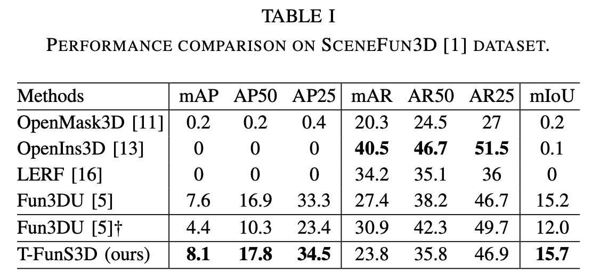

Select a scene and text query below to explore interactive 3D functionality segmentation results.
Predictions are visualized as red points, ground truth as blue points, and their overlaps as green points.
Select a scene and text query below to explore interactive 3D functionality segmentation results.
Predictions are visualized as red points, ground truth as blue points, and their overlaps as green points.
Open-vocabulary 3D functionality segmentation enables robots to localize functional object components in 3D scenes. It is a challenging task that requires spatial understanding and task interpretation. Current open-vocabulary 3D segmentation methods primarily focus on object-level recognition, while scene-wide part segmentation methods attempt to segment the entire scene exhaustively, making them highly resource-intensive. However, such significant computational and storage capacities are typically not accessible on the majority of mobile robots. To address this challenge, we introduce T-FunS3D, a task-driven hierarchical open-vocabulary 3D functionality segmentation method that provides actionable perception for robotic applications. Given a task description, T-FunS3D identifies the most relevant instances in an open-vocabulary scene graph and extracts their functional components. Experiments on SceneFun3D demonstrate that T-FunS3D outperforms baseline methods in open-vocabulary 3D functionality segmentation, while achieving faster runtime and reduced memory usage.

T-FunS3D is a novel method for efficient open-vocabulary functionality understanding and segmentation in 3D scene using scene graph and VLM. Given a point cloud of a 3D scene, a set of RGB-D views showing the scene along with the associated camera poses, and a description of an action to perform, T-FunS3D segments the functional object(s) that can be used to carry out the specific action to complete a task. Relying on pre-trained vision and language models, T-FunS3D is a training-free method and does not require task-specific annotations.

The entire pipeline consists of four main modules (A-D), split into two stages, including an instance-level scene graph construction stage (I) and a task-driven functionality segmentation stage (II). At stage I, (A) performs open-vocabulary instance segmentation by associating FG-CLIP [2] visual embeddings to class-agnostic instance segmentation from Mask3D [3]. We construct a scene graph of the featurized instances (B). Note that stage I is executed only once per scene, assuming no distinct spatial changes in the environment, and the resulting scene graph is reused for different tasks at stage II. In addition, the constructed scene graph is compact, as it only contains object instances in nodes and their relationships in edges that are stored as embedding feature vectors. Along with the embeddings, the top-k selected views of each instance are also stored to facilitate efficient 2D mask extraction at stage II. Therefore, T-FunS3D is efficient in terms of both runtime and memory usage.
Stage II begins, once a task is assigned. The free-form task description is decompsed into ontologies using Qwen3 [4] (C). Based on the extracted information, we identify the contextual object in the scene graph (D) by computing the text-visual embedding similarity for candidate nodes and their corresponding edges. Lastly, (E) aggregates 2D masks extracted by combining Molmo [5] with SAM [6] to obtain 3D segmentation of functional parts.
Quantitative results of T-FunS3D on the validation split of SceneFun3D [1]. We evaluated our method's ability to segment functional parts according to task descriptions on the validation split of the SceneFun3D [1] dataset. We compared T-FunS3D with four baselines: OpenMask3D [7], LERF [8], OpenIns3D [9], and Fun3DU [10]. Among them, the first three are SOTA open-vocabulary 3D instance segmentation methods, while Fun3DU is the first method dedicated to functionality segmentation in 3D scenes. As shown in the table, T-FunS3D outperforms all baselines by a clear margin in terms of mAP50, mAP25, and mIoU, demonstrating its effectiveness in open-vocabulary 3D functionality segmentation.

Qualitative results of T-FunS3D on SceneFun3D [1]. Point clouds around the functional parts are highlighted for better visualization: red points indicate predictions, blue points denote ground truth, and green points represent overlaps.